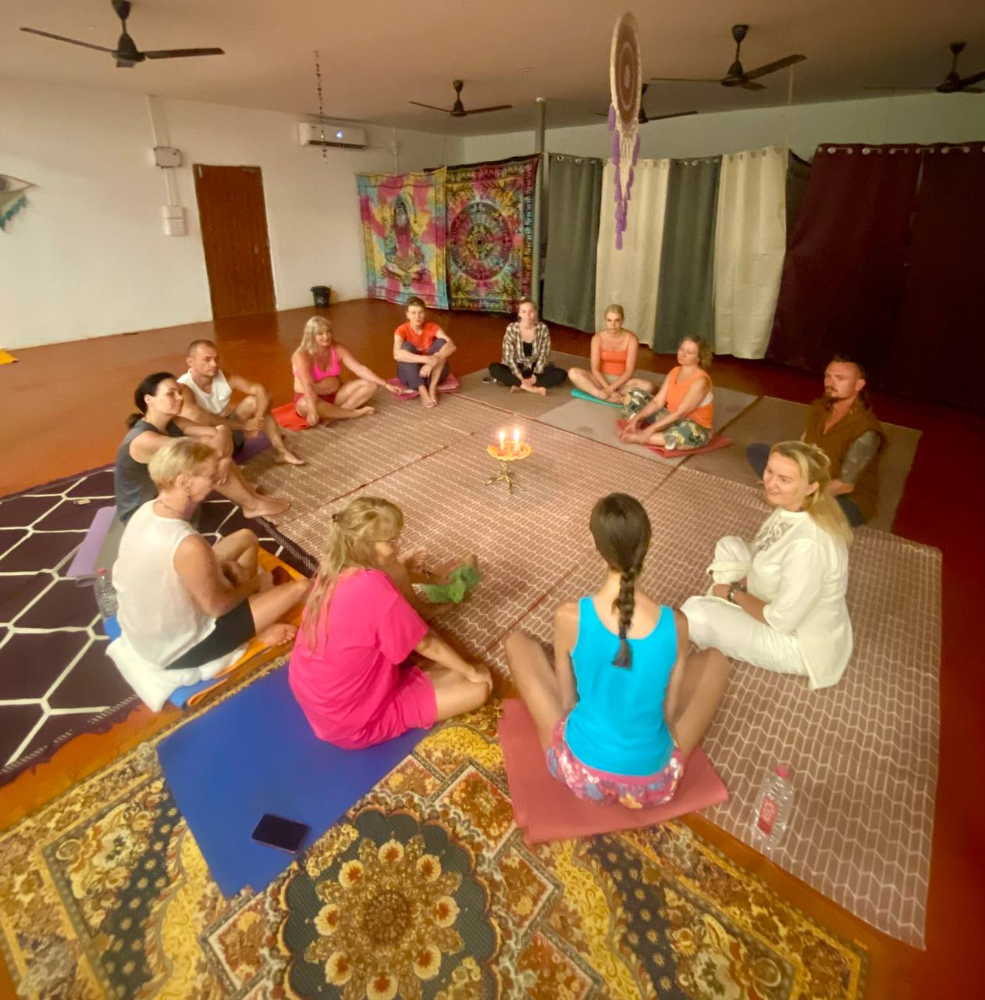
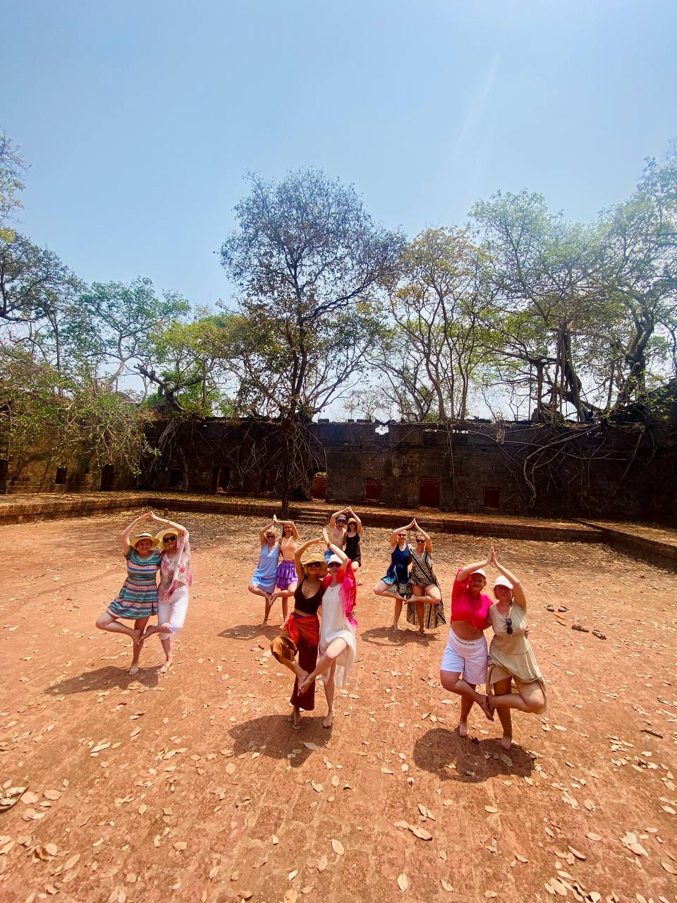
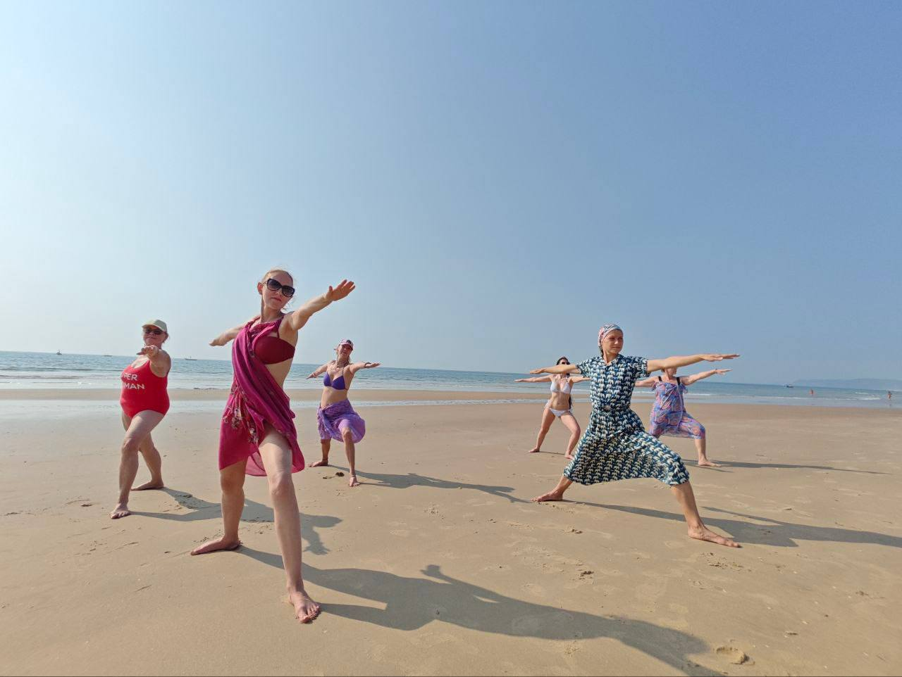
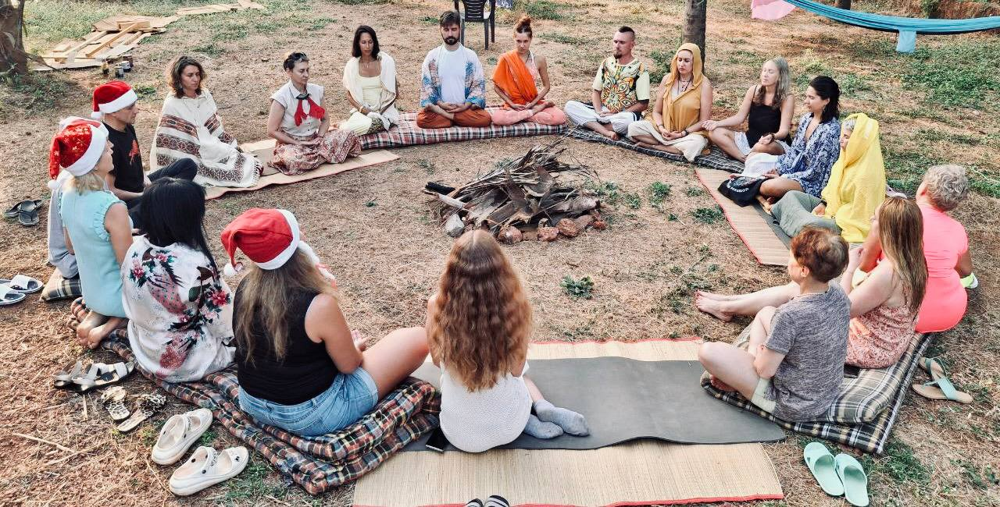
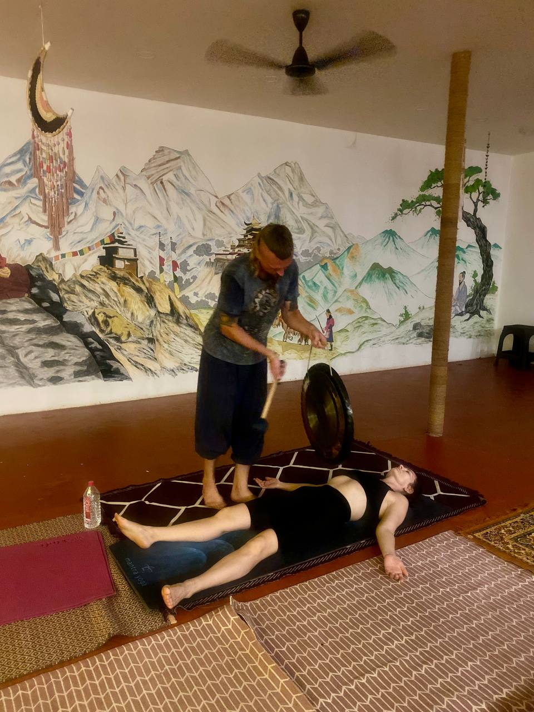
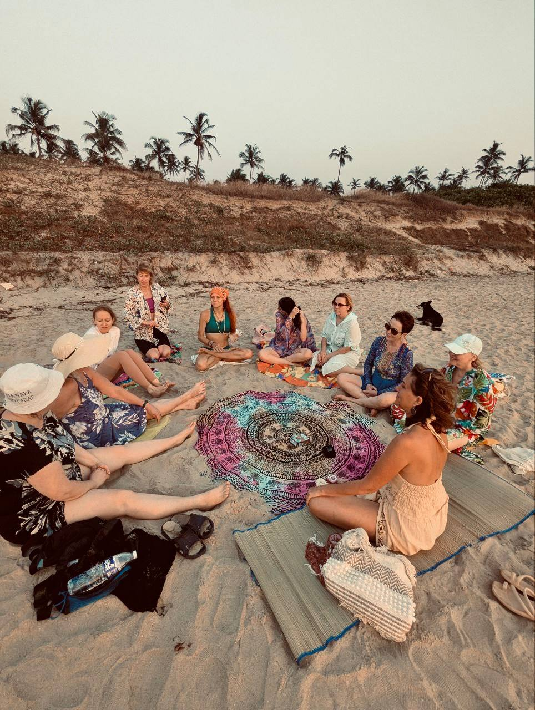
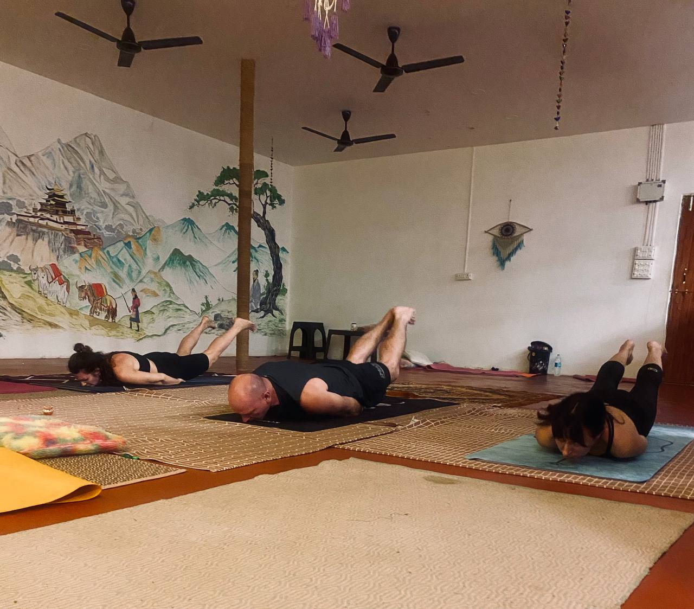

GOA FLOW · INNER RHYTHM
You may leave
with a new rhythm.
Goa Flow is not a checklist of classes. It is space for the body to release tension, for the mind to grow quieter and for something new to appear. In 12 days, you do not have to become a “better version” of yourself — but you may hear yourself more clearly and take that connection home.

that stays
after the trip.
NOT AN INTENSIVE. NOT A CHECKLIST.
Each practice is an invitation to slow down and meet yourself differently. Come with experience or without it, choose your depth and leave room for rest, sea and real connection.
01 · SOUND AND STILLNESS
Gong and bowls,
when the body remembers stillness.
Gong meditation and Tibetan singing bowls do not ask for effort. Sound helps attention move from the endless inner dialogue to breath, sensation and the silence between notes.
You can simply lie down, listen and stop solving anything. Sometimes that becomes the deepest part of the journey.






02 · BODY AND FREEDOM
Hammock yoga
and movement without judgement.
In a hammock, the body feels supported and remembers that movement can be playful. You do not need to be flexible or perform difficult shapes — curiosity, breath and pleasure are enough.
Movement practices bring back lightness: afterwards you want to walk to the ocean, laugh and live the day more vividly.
03 · MEETING YOURSELF
Women’s circle
and art therapy.
A women’s circle is a gentle space without the need to perform. Speak, listen, be quiet, notice your feelings and receive the group’s support.
Art therapy gives form to what words cannot always hold: colour, line, collage and a simple creative process. You do not need to know how to draw — curiosity is enough.



BEYOND THE STUDIO
Ecstatic dance,
live music and Goa.
We may join an ecstatic dance — free movement to music without set steps or judgement — and live music concerts. It is practice in another space: more freedom, rhythm, laughter and the feeling that life is happening now.